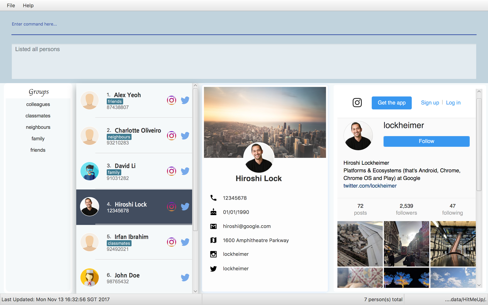

Software Engineer | Web Application Developer | AI Enthusiast
I am currently a sophomore in National University of Singapore (NUS) School of Computing majoring in Computer Science. On top of pursuing academic excellence, I am actively involved in hostel activities as well. Being the previous Sports Director of my hostel, I was given the opportunity to serve the community that I have come to know and love. In order to broaden my perspectives, I engaged in activities outside my comfort zone such as dancing, singing and soccer. I believe that these experiences from differing backgrounds will enhance my ability to empathize with more situations.
Having worked in a start-up before, I understand the micro-cycles and fast pace nature of its operation. I enjoy the start-up culture where we can sit across the dining table, talking about the endless possibilities that can ensue from our efforts; and I hope that you can give me this opportunity to get excited about your dreams together.
Even though I am only a sophomore, the NUS curriculum coupled with my internship experiences have provided me with excellent exposure to tech solutions. I have had the opportunity to program in a few languages as well as engaging in both front and back end development. To top it off, I am currently training an AI tetris player using genetic algorithm for one of my course modules. These are a few areas which I am passionate about:
It is not the critic who counts; not the man who points out how the strong man stumbles, or where the doer of deeds could have done them better. The credit belongs to the man who is actually in the arena, whose face is marred by dust and sweat and blood; who strives valiantly; who errs, who comes short again and again, because there is no effort without error and shortcoming; but who does actually strive to do the deeds; who knows great enthusiasms, the great devotions; who spends himself in a worthy cause; who at the best knows in the end the triumph of high achievement, and who at the worst, if he fails, at least fails while daring greatly, so that his place shall never be with those cold and timid souls who neither know victory nor defeat.
• Maintained a web application chat bot in Django
• Extended chat bot to other regions by deploying additional instances using AWS EC2
• Implemented black-box services for the company’s application using Sendgrid and Nexmo
• Made HTTPs post requests with JSON to update databases
• Implemented image-upload service with AWS S3 buckets and Python
• Engaged in marketing surveys and crafted summary reports
This was my very first internship and the fact that it was a start-up made it an extremely challenging one. I had to adapt quickly to the face-paced environment of a start-up where we will have daily stand-ups and to check on the progress of our weekly objectives. I was initially foreign to the idea of working in close proximity to the CEO and CTO of an organization as this is a trait unique to start-ups. However, I quickly grew accustomed to it and even started to enjoy the daily interactions with them as they continuously guide me with their abundant experience. As the start-up was part of an accelerator programme, I was fortunate to be exposed to the weekly talks and networking sessions that this programme provides. Overall, I really learnt alot from this internship and I'm glad that I was able to contribute to this fun company.
• Taught up to 8 private students and employed at 3 different tuition centres
• Managed the workload of students and tracked their progress
• Formulated teaching resources to aid learning of students
This period of time really taught me the importance of time management as there were days where I will have up to 5 classes at different locations. I had to plan my time tediously to ensure that I was punctual for every class. My patience was tested to the limits as I had to deal with classes with up to 12 students of age 10 - 12. It was not easy teaching kids at the peak of their energy and I had to sharpen my communication skills to ensure that I could successfully educate them.
• Contributed to the increase in the percentage of passes for trainee’s test by reviewing the academic materials and updating them accordingly.
• Responsible for the all media-related materials in the school. Create media materials (Videos, Photo Montage and Posters) for the trainee’s parade when they complete their training term
• Expedited the transition from traditional pedagogy to a more technological-savvy one by creating a simple web application for educational purposes
• Appointed with a secondary role as vice-chairperson for the Anniversary event where I had to coordinate with multiple vendors as well as negotiate for suitable prices to successfully plan it
This role is part of a 22 months conscription to the defence of Singapore. My primary role was the knowledge and media instructor, in charge to the engineering knowledge of all cadets that pass out from the combat engineering course. I was first exposed to coding when I was tasked to create a website to aid the cadets in the learning of combat engineer theories. This was when I realised that I kind of enjoy coding and applied for Computer Science Major in NUS.
• Oversaw the operation of 30 sports and Sports Management Board (SMB)
• Restructured SMB by attaching a team manager to each sport in order to provide more support to the teams
• Actively discussed the overall direction of the hall and implemented policies for improvements
• Organized Inter-Hall Games (IHG) for 30 sports which had over 900 participants
Being elected as the Sports Director, I felt immense pressure and responsibility to ensure that everyone's faith in me was accounted for. I was stretched to my limits as I balanced acadamic work as well as part-time internship while fulfulling the role of the sports director at the same time. I had to continously hone my communication skills because liasing with 30 sports and many different factions of the hostel to ensure that processes are smooth was no menial task. There were several stretches where we had meetings till 4am in the morning back to back so that we can assure everyone that we have covered every perspective before making a collective decision. This arduous journey allowed me to develop immensely as an individual, especially in areas where clear communication, passion and grit is needed.
• Participated in a Overseas Community Involvement Project (OCIP) in Nusa Penida, Indonesia
• Actual trip lasted 3 weeks but fund raising started as soon as the committee was selected
• Collaborated with local villagers to build a community hall from scratch
• Planted 1000 cashew apple plants for the villagers
• Built an incinerator in a school for proper disposal of rubbish
• Educated the students about the importance of environmental preservations through games
Being my first OCIP, this experience really taught me the importance of giving back the community as while as helping others. The sense of satisfaction when your actions bring smiles to the faces of many is an addicitive one. I will say that it is borderline selfish because I feel as though I gained more personally than the villagers that I was helping. But nonetheless, it allowed me to understand that you actually gain when you give.
Some notable modules I pursued:
• CS1020 & CS2010 Data Structures and Algorithms
• CS2102 Database Systems
• CS2103 Software Engineering
• CS2105 Introduction to Computer Networks
• CS3230 Design and Analysis of Algorithms
• CS3243 Introduction to Artificial Intelligence
Pursued a Science course and attained 5 Distinctions